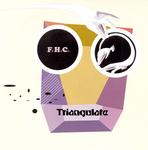

| Artist: | Fox Hole Commune |
| Title: | Triangulate |
| Label: | Vital Records - Poseidon |
| Length(s): | 39 minutes |
| Year(s) of release: | 2004 |
| Month of review: | [06/2006] |
| 1) | Get My Goat | |
| 2) | Elephant Walk | |
| 3) | First Off | |
| 4) | Beautiful Drowned Man | |
| 5) | Ocean & Strains Part II | |
| 6) | Asymptomatic | |
| 7) | Crayfish | |
| 8) | 1cm Per 1 Day | |
| 9) | Rat With A Black Head | |
| 10) | Don't Mix | |
| 11) | Ocean & Strains Part III | |
| 12) | Not To Be Taken Internally | |
| 13) | Dacoit | |
| 14) | Hoppy | |
| 15) | No Talking | |
| 16) | Doodad | |
| 17) | Star Shape Crystal | |
| 18) | Round Off | |
| 19) | Right Foot | |
| 20) | Jugular | |
| 21) | Tepidarium |